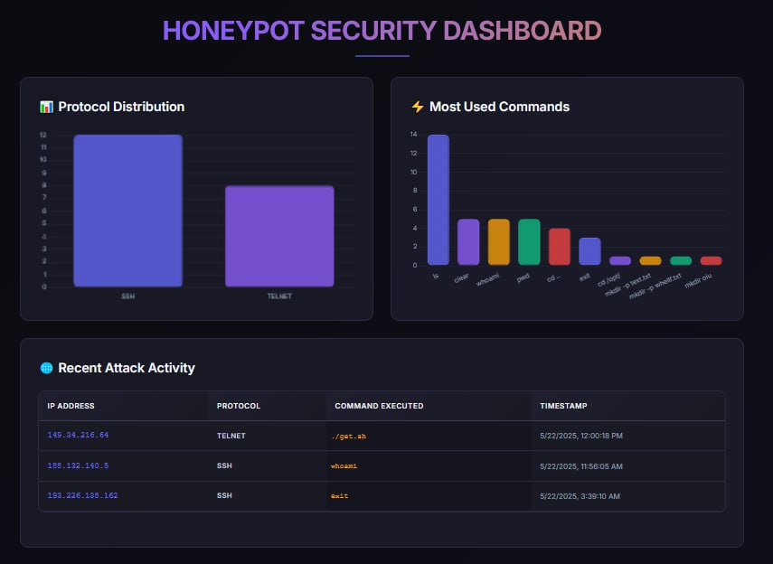

Real-Time Trap system Log System
Project Overview
This project involved building a real-time web dashboard to monitor and visualize data from a custom Trap system designed for detecting unauthorized access attempts. Through this project, I gained practical system administration experience by deploying the TRAP system on a server, and valuable insights into data visualization and backend development using Flask.
Detailed Description
Background and Motivation
The motivation behind this project was to create a robust and intuitive way to monitor security events generated by a custom-built "Trap" system. This system was designed to simulate a honeypot, capturing and logging unauthorized access attempts. My goal was to transform raw log data into actionable insights through a real-time visual dashboard, making it easier to understand attack patterns and system vulnerabilities.
Key Features
- Real-time Data Visualization: Implemented a web dashboard using Flask and Chart.js to display incoming log data in real-time.
- Cloud-Based Network Architecture: Deployed the Trap system and dashboard on separate cloud networks, ensuring secure communication across different environments.
- Custom Trap System & Deployment: Developed and deployed a custom "Trap" system to generate security logs, including permissions management and server configuration on Linux.
- RESTful API: Created a Flask-based REST API to securely receive and process log data from the Trap system.
- Data Parsing and Storage: Designed a mechanism to parse raw log entries and store them efficiently for analysis.
- User-Friendly Interface: Utilized Bootstrap for a responsive and intuitive user interface, ensuring accessibility across various devices.
Technical Challenges & Solutions
One significant challenge was ensuring the real-time update of the dashboard without excessive server load. This was addressed by using efficient data streaming techniques and optimizing the API responses. Another challenge involved accurately parsing diverse log formats from the custom trap system, which required robust error handling and flexible parsing logic.